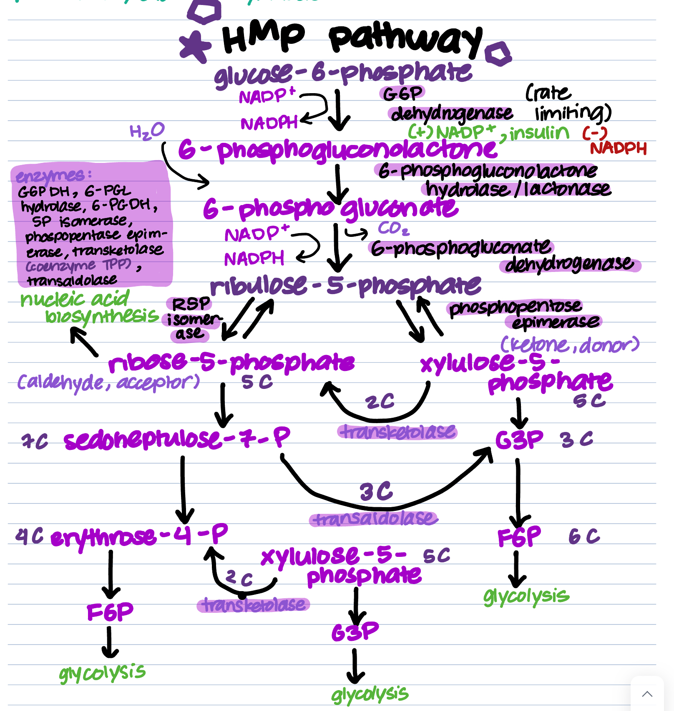

Welcome to the HMP Pathway! HMP is short for hexose monophosphate. It's also called the pentose phosphate pathway. It generates pentose phosphates and NADPH, which can be used in other pathways. It is one of the pathways glucose can head down during the fed state. Let's take a look.
The HMP pathway is a pathway in which glucose can be converted into major intermediates. It has 2 phases, but its main phase can be summed up in this general formula.
| Glucose 6-Phosphate + 2 NADP+ + H2O ↔ Ribose 5-Phosphate + 2 NADPH + CO2 + 2H+ |
HMP mainly creates pentoses which can be used to synthesize nucleotides (ribose-5-P). It also generates NADPH and generates glycolytic and gluconeogenic intermediates.
HMP occurs in cells that require NADPH, cuh as erythrocytes, white blood cells, liver, and adipose tissue. NADPH is required in processes such as scouting free oxygen radicals and killing phagocytised foreign bacteria. It also provides templates to synthesize nucleic acids and intermediates for other pathways requiring its products (glycolysis, gluconeogenesis).
The HMP pathway can be broken down into two phases: oxidative and non-oxidative. Take a look at the table below.
| Phase | Summary |
|---|---|
| Oxidative | 2 NADPH is generated, one from the rate limiting step, which converts glucose-6-phosphate to 6-phsophogluconolactone, and one from the conversion of 6-phosphogluconate to ribulose-5-phosphate. NADP and Mg2+ are required. CO2 is generated from the last step. This phase is irreversible. |
| Non-oxidative | Ribulose-5-phosphate is interconverted into different compounds using transketolase and transaldolase, which add or remove 2 or 3 carbons respectively. TPP is required as a coenzyme for transketolase. This phase links and creates fructose-6-phosphate and G3P to glycolysis. It also creates ribose-5-phosphate which is used for nucleic acid biosynthesis. This phase is reversible. |
This process takes place after a meal, or during the fed state. It is indirectly upregulated by insulin, but mostly regulated by NADP+/NADPH ratio.
| Enzyme | Reaction | Activator | Inhibitor |
|---|---|---|---|
| G6P dehydrogenase | Glucose-6-phosphate → 6-phosphogluconolactone | NADP+, insulin | NADPH |
| 6-phosphogluconate dehydrogenase | 6-phosphogluconate → ribulose-5-phosphate | NADP+ | NADPH |
| Though transketolase and transaldolase do not have allosteric regulators, their activities depend on substrate availability. | |||
Check out this diagram, outlining the full picture of the pathway.
